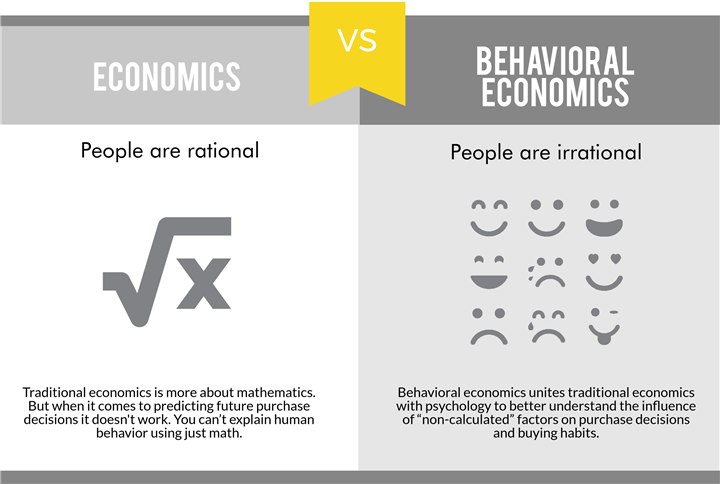

Four Big Ideas
Preferences, Utility, Expectations, Equilibrium
Four Big Ideas
Almost all modern economic research is based on microfoundations. Most economic models contain:
- An agent (consumer, household, taxpayer, firm, etc.) who has preferences over outcomes, represented by a utility function.
- If outcomes are uncertain, the model specifies the agent’s expectations.
- When two or more agents interact, you need an equilibrium concept to solve the model.
Preferences, utility, expectations, and equilibrium are big terms.
They are also controversial.
We’ll clarify what they mean to us.
(Really, I am going to tell you what they mean to me.)
Preferences
In essentially all models, agents must choose an item from a set.
Let’s define the outcome set \(\mathcal{Z}\). This set has a Cartesian product \(\mathcal{Z}\times\mathcal{Z}\). A binary relation is any subset \(\mathcal{B} \subseteq \mathcal{Z} \times \mathcal{Z}\).
If the binary relation \(\mathcal{B}\) captures preferences, then we would read \((x,y)\in\mathcal{B}\) as “the agent likes \(x\) at least as much as \(y\).”
This is more commonly written as \(x\succeq y\) (both notations mean exactly the same).
Preferences are just binary relations over sets PLUS:
Rationality
A preference relation \(\succeq\) is called rational if it satisfies:
Completeness: For all \(x,y \in \mathcal{Z}\), either \(x \succeq y\) or \(y \succeq x\).
Transitivity: For all \(x,y,z \in \mathcal{Z}\), if \(x \succeq y\) and \(y \succeq z\), then \(x \succeq z\).
- Completeness means that for every pair of outcomes, the preference describes a relation between them.
- There are no two things the agent cannot compare.
Preferences are just binary relations over sets PLUS:
Rationality
A preference relation \(\succeq\) is called rational if it satisfies:
Completeness: For all \(x,y \in \mathcal{Z}\), either \(x \succeq y\) or \(y \succeq x\).
Transitivity: For all \(x,y,z \in \mathcal{Z}\), if \(x \succeq y\) and \(y \succeq z\), then \(x \succeq z\).
- Transitivity is a consistency condition.
- If you prefer books to bagels and bagels to beer, you should also prefer books to beer.
Preferences are just binary relations over sets PLUS:
Rationality
A preference relation \(\succeq\) is called rational if it satisfies:
Completeness: For all \(x,y \in \mathcal{Z}\), either \(x \succeq y\) or \(y \succeq x\).
Transitivity: For all \(x,y,z \in \mathcal{Z}\), if \(x \succeq y\) and \(y \succeq z\), then \(x \succeq z\).
- Behavioral economics almost exclusively assumes that preferences are rational.
Sorry pop science

- The text on the left is almost completely wrong.
- The text on the right is OK.
- We will do the stuff on the right still using math.
Are Rational Preferences Selfish?
Rationality says nothing about the content of preferences. Many people conflate “rational” with “selfish,” but these are separate assumptions. Economists often assume both rationality and selfishness. If you want a catchall term, you can say homo oeconomicus.
We do not need to assume selfishness for most of the theory to work
Why assume selfishness?
“It is not from the benevolence of the butcher, the brewer, or the baker, that we expect our dinner, but from their regard to their own interest.”
— Adam Smith, Wealth of Nations
Historically, selfishness has been justified pragmatically (worst-case assumption, easy to apply in many cases).
Why assume selfishness?
“It is not from the benevolence of the butcher, the brewer, or the baker, that we expect our dinner, but from their regard to their own interest.”
— Adam Smith, Wealth of Nations
“Happy families are all alike; every unhappy family is unhappy in its own way.” — Leo Tolstoy, Anna Karenina
Historically, selfishness has been justified pragmatically (worst-case assumption, easy to apply in many cases).
Utility
We rarely work with preferences directly. Instead, we typically use utility functions, which assign a real number to each outcome. Higher numbers indicate a more preferred outcome.
Utility Function
A function \(u: \mathcal{Z} \to \mathbb{R}\) represents \(\succeq\) if, for all \(x,y \in \mathcal{Z}\),
\[
x \succeq y \quad \Longleftrightarrow \quad u(x) \ge u(y).
\]
A key result is that a rational preference relation can be represented by a utility function if \(\mathcal{Z}\) is finite (and, more generally, if certain continuity conditions hold in infinite sets).
Proposition
If \(\mathcal{Z}\) is finite, any rational preference \(\succeq\) can be represented by a utility function \(u: \mathcal{Z} \to \mathbb{R}\).
- Utility maximization is not an assumption.
- It is a mathematical consequence of rationality.
Example: Selfish vs. Prosocial vs. Crazy Preferences
An agent choosing from \(\mathcal{Z} = \{\text{keep }10€,\text{donate }10€,\text{burn }10€\}\) could have:
- Luca (Selfish): \(\text{keep }10€ \succ \text{donate }10€ \sim \text{burn }10€\).
- Represented by \(u(\text{keep})=2, u(\text{donate})=1, u(\text{burn})=1\).
Example: Selfish vs. Prosocial vs. Crazy Preferences
An agent choosing from \(\mathcal{Z} = \{\text{keep }10€,\text{donate }10€,\text{burn }10€\}\) could have:
- Jules (Prosocial): \(\text{donate }10€ \succ \text{keep }10€ \succ \text{burn }10€\).
- Represented by \(u(\text{donate})=3, u(\text{keep})=2, u(\text{burn})=1\).
Example: Selfish vs. Prosocial vs. Crazy Preferences
An agent choosing from \(\mathcal{Z} = \{\text{keep }10€,\text{donate }10€,\text{burn }10€\}\) could have:
- Kim (Crazy): \(\text{burn }10€ \succ \text{keep }10€ \succ \text{donate }10€\).
- Represented by \(u(\text{burn})=3, u(\text{keep})=2, u(\text{donate})=1\).
Takeaways
- Utility is just a number we use to rank outcomes.
- A higher number means “more preferred”.
- We can use the utility approach if we assume that preferences are rational.
Expectations
- When an outcome is uncertain, agents form expectations that influence their choices.
- A traditional (and highly simplifying) assumption is rational expectations: agents perfectly understand the data-generating process and apply probability theory correctly.
Example: Dynamic supply and demand
\[ D_1 = \alpha -\beta p_1, \\ S_1 = \gamma p_1^e + u_1, \\ D_1 = S_1, \]
- Firm produces in \(t=0\). Has to calculate the expected price in \(t=1\).
- \(u_1\) is a supply shock with \(\mathrm{E}[u_1] = 0\) that the firm does not know in \(t=0\) (hence, uncertainty).
Example: Dynamic supply and demand
\[ D_1 = \alpha -\beta p_1, \\ S_1 = \gamma p_1^e + u_1, \\ D_1 = S_1, \]
- How to solve this? First, plug in the equilibrium condition… \[ \alpha - \beta p_1 = \gamma p_1^e + u_1 \rightarrow p_1 = \frac{\alpha - \gamma p_1^e - u_1}{\beta}. \]
Example: Dynamic supply and demand
- How to solve this? First, plug in the equilibrium condition… \[ \alpha - \beta p_1 = \gamma p_1^e + u_1 \rightarrow p_1 = \frac{\alpha - \gamma p_1^e - u_1}{\beta}. \]
- Assume rational expectations. This adds the constraint that expectations are correct on average: \(p_1^e = \mathrm{E}[p_1]\).
Example: Dynamic supply and demand
Assume rational expectations. This adds the constraint that expectations are correct on average: \(p_1^e = \mathrm{E}[p_1]\).
Hence, in \(t=0\) the firm expects: \[ \mathrm{E}[p_1] = \frac{\alpha - \gamma \mathrm{E}[p_1] - \mathrm{E}[u_t]}{\beta} \Rightarrow \mathrm{E}[p_1] = \frac{\alpha - \mathrm{E}[u_1]}{\beta + \gamma}. \]
Since \(\mathrm{E}[u_1] = 0\), the expected price is \(\mathrm{E}[p_1] = \frac{\alpha}{\beta + \gamma}\).
The long shadow
- We just speedran the traditional approach to expectations (we’ll be more detailed later).
- In our model, price expectations were key to determining the equilibrium.
- By assuming they are rational, they become endogenous.
The long shadow
- By assuming they are rational, they become endogenous.
- Note how this is different from a parameter, like the price elasticity.
- A price elasticity parameter is exogenous to the model. We have to estimate it it using data.
- A rational expectation is endogenous to the model. It is not a free parameter that can be estimated.
- This is the reason why economists traditionally do not care about expectations data.
“Like utility, expectations are not observed, and surveys cannot be used to test the rational expectations hypothesis.” — Prescott (1977)
“Once we depart from the full‑information rational‑expectations benchmark, we find ourselves in a wilderness of bounded rationality, with far too many ways to be slightly irrational” — Sargent (1993)
“Happy families are all alike; every unhappy family is unhappy in its own way.” — Leo Tolstoy, Anna Karenina
“Happy families are all alike; every unhappy family is unhappy in its own way.” — Leo Tolstoy, Anna Karenina
- The caution of classical economists has some merit. We want models not only to be realistic but also versatile.
- We are looking for maps of the world, not to recreate every detail.
- But: Better theoretical and empirical methods allowed us to identify and work with deviations from classical assumptions.
Equilibrium
- In economics, we often study interactions between agents.
Example Public Goods Game. Two agents choose efforts \(e_1,e_2\) to produce an output. Utility: \(u(e_i, e_{-i}) = e_i + e_{-i} - c(e_i)\), with \(c(e_i)=\tfrac12 e_i^2\).
- Both agents choose simultaneously. How should they choose their effort when the other didn’t choose yet?
Example, continued
Example: Public Goods Game. Two agents choose efforts \(e_1,e_2\) to produce an output. Utility: \(u(e_i, e_{-i}) = e_i + e_{-i} - c(e_i)\), with \(c(e_i)=\tfrac12 e_i^2\).
Nash Equilibrium
A strategy profile \((e_1^*, e_2^*)\) is a Nash Equilibrium if, for each player \(i\), \(e_i^*\) is a best response to \(e_{-i}^*\). In symbols: \[
u(e_i^*, e_{-i}^*) \ge u(e_i, e_{-i}^*) \quad \forall e_i \in \mathbb{R_+}.
\]
Example, continued
Example: Public Goods Game. Two agents choose efforts \(e_1,e_2\) to produce an output. Utility: \(u(e_i, e_{-i}) = e_i + e_{-i} - c(e_i)\), with \(c(e_i)=\tfrac12 e_i^2\).
- Here, the Nash Equilibrium is \(e_1^* = e_2^* = 1\).
- The social optimum is \(e_1^O=e_2^O = 2\). Since \(e_i^O > e_i^*\), the NE allocation is inefficient.
Example, continued
Example: Public Goods Game. Two agents choose efforts \(e_1,e_2\) to produce an output. Utility: \(u(e_i, e_{-i}) = e_i + e_{-i} - c(e_i)\), with \(c(e_i)=\tfrac12 e_i^2\).
- That \(e_i^O > e_i^*\) illustrates the Tragedy of the Commons.
- It is commonly attributed to selfish preferences.
- But this is incorrect: The tragedy of the commons is really driven by the joint assumption of (i) selfish preferences and (ii) Nash Equilibrium.
Alternatives to Nash?
Consider this
“Act only according to that maxim whereby you can at the same time will that it should become universal law.” — Immanuel Kant

Kantian Equilibrium
Kantian Equilibrium (Roemer 2010, SJE) A strategy profile \((e_1^K,e_2^K)\) is a Kantian Equilibrium if, for each player \(i\), \[ \arg\max_{\alpha \in \mathbb{R_+}} u(\alpha e_i^K,\alpha e_{-i}^K) = 1. \]
Kantian Equilibrium
- Formalizes a Kantian equilibrium condition:
- If agent \(i\) considers deviating, \(i\) asks “If everyone deviates in the same way that I do, would I be better off?”
- Different from Nash:
- If agent \(i\) considers deviating, \(i\) asks “If I deviate and no one else does, would I be better off?”
Kantian Equilibrium
- Formalizes a Kantian equilibrium condition:
- If agent \(i\) considers deviating, \(i\) asks “If everyone deviates in the same way that I do, would I be better off?”
- Different from Nash:
- If agent \(i\) considers deviating, \(i\) asks “If I deviate and no one else does, would I be better off?”
Kantian Equilibrium
- Selfish preferences + Kantian Equilibrium \(\rightarrow\) No tragedy of the commons.
- To see this, derive \[\arg\max_{\alpha} u(\alpha e_i^K, \alpha e_{-i}^K) \]
- First-order condition: \[e_i^K + e_{-i}^K - \alpha e_i^{K2} = 0.\]
Kantian Equilibrium
- To see this, derive \[\arg\max_{\alpha} u(\alpha e_i^K, \alpha e_{-i}^K) \]
- First-order condition: \[e_i^K + e_{-i}^K - \alpha e_i^{K2} = 0.\]
- In a symmetric equilibrium, \(e_i^K = e_{-i}^K\): \[2e_i^K - \alpha e_i^{K2} = 0.\]
Kantian Equilibrium
- First-order condition: \[e_i^K + e_{-i}^K - \alpha e_i^{K2} = 0.\]
- In a symmetric equilibrium, \(e_i^K = e_{-i}^K\). Simplifying: \[2e_i^K - \alpha e_i^{K2} = 0.\]
- If \(e_i^K = 2\), \(\alpha = 1\).
- The social optimum is a Kantian Equilibrium, even with selfish preferences.
Taking Stock
- Standard economic results are driven by joint assumptions about preferences and the equilibrium definition.
- If there is uncertainty, assumptions about expectations matter as well.
- Historically, arguments in favor of selfish + rational + Nash often made on pragmatic or normative grounds.
- There is one way to be selfish/rational but a million ways to be something else.
- “People are not stupid.”
Taking Stock
- Historically, arguments in favor of selfish + rational + Nash often made on pragmatic or normative grounds.
- Goal of behavioral economics:
- Find a set of assumptions on preferences, equilibrium, expectations that has a solid empirical foundations.
- With some pragmatism still involved (e.g., rationality assumption).
This course
- We will learn about alternative models of preferences and beliefs (and possibly also equilibria).
- (we might not get so far)
Outline
- Expected utility & its critiques
- Reference-dependent preferences
- Time preferences
- Beliefs (theory)
- Beliefs (humans)
- Memory as a determinant of beliefs
- Expectation management and belief-based utility
Challenges
- Behavioral economics studies deviations from the standard model.
- So, behavioral economists typically know the standard model extremely well.
- We will do have to learn quite a bit about the standard model as well.
Challenges
- Behavioral economics aims to be empirically informed.
- We will need to talk about empirics even though this is a theory class.
- In this course, we will talk about empirics on the fly when they become relevant.
Challenges
- Behavioral economics presents no single alternative model.
- A heavy dose of pragmatism remains: “All models are wrong, some are useful.”
- We hope to add a few more useful models to our list.
Challenges
- This is not a policy course.
- You will learn about fundamentals of human behavior.
- This leads a lot of the transfer to practical applications to you.
- I encourage you to observe and introspect:
- In your daily life, which models can you use to make sense?
- Same when reading the news.
- Bring examples to class, ask, discuss, criticise…